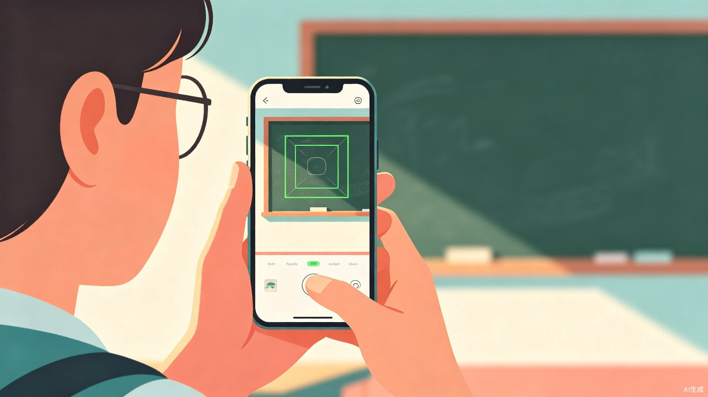
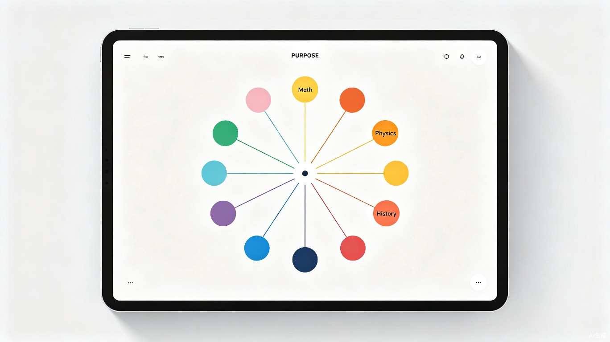

一、创意介绍
1.1 创意名称
智课拍拍 —— 一款基于 AI 视觉识别与大语言模型的课堂知识智能助手 App。用户只需拍摄课堂板书、PPT 或讲义照片，系统即可自动提取知识点、生成通俗易懂的讲解内容，并将整门课程的知识体系构建为交互式思维导图，帮助学习者高效掌握知识脉络。
1.2 想解决什么问题
1.3 灵感来源
作为学生，笔者深刻体会到课堂记笔记的两难困境：埋头抄写就顾不上听讲，专心听讲又漏掉关键板书。课后面对几十页手写笔记，常常要花大量时间重新整理才能形成体系。随着多模态大模型和 OCR 技术的成熟，让 AI 充当"课后私教"，帮学生自动整理知识、构建思维导图，成为解决这一痛点的天然方案。
1.4 产品形态
一款面向大中小学生及终身学习者的 移动端 App（支持 iOS / Android），核心功能包括：拍照识图、AI 知识点总结、通俗讲解、课程思维导图生成、知识卡片复习。
二、目标用户及痛点
2.1 核心用户群体
在校大学生
面对多门专业课，笔记量大、知识体系复杂，需要高效整理和复习工具。
中学生 / 高中生
课程节奏快，理科公式推导和文科知识脉络梳理需求强烈。
考研 / 考证人群
需要快速建立学科知识框架，系统化复习备考资料。
终身学习者
参加培训、讲座、在线课程，希望将碎片化学习内容结构化。
2.2 使用场景
- 课堂实时记录：上课时快速拍摄板书或 PPT，课后让 AI 自动整理成结构化笔记
- 课后复习巩固：打开 App 查看 AI 生成的知识点总结和通俗讲解，替代翻阅厚重教材
- 考前系统梳理：通过课程思维导图快速回顾整门课的知识体系，查漏补缺
- 跨课程知识关联：发现不同课程之间的知识联系，构建个人知识图谱
2.3 当前痛点
如果没有「智课拍拍」，用户目前面临以下不便：
记录与听讲不可兼得：手写笔记速度远慢于老师讲课速度，导致"抄板书"和"听讲解"只能二选一。
笔记零散难以体系化：传统笔记按时间顺序记录，缺乏知识层级和逻辑关联，复习时效率极低。
专业术语理解门槛高：教材和课堂讲解往往使用学术语言，初学者难以快速 grasp 核心概念。
整理笔记耗时巨大：课后重新整理笔记、画思维导图往往需要花费与上课同等甚至更长时间。
三、价值与意义
3.1 效率提升
「智课拍拍」将传统"拍照 + 手动整理 + 查阅理解"的课后学习流程，压缩为"拍照 → AI 自动处理 → 直接学习"的一站式体验。据估算，可将课后笔记整理时间从平均 2 小时缩短至 5 分钟以内，知识梳理效率提升 20 倍以上。同时，AI 生成的通俗讲解降低了知识理解门槛，让学习者能将更多时间用于深度思考而非机械记忆。
3.2 社会价值
教育公平是社会公平的重要基石。「智课拍拍」通过 AI 技术将优质的学习辅助能力普惠化：
- 降低教育资源门槛：让缺乏优质辅导资源的学生也能获得"一对一私教"般的知识讲解服务
- 助力自主学习：培养学生结构化思维和知识管理能力，受益终身
- 支持特殊教育：为听障、阅读障碍等学习者提供可视化的知识呈现方式
- 促进教育数字化：推动传统课堂向智能化、个性化学习转型
效率跃升
课后整理时间从 2h 降至 5min
教育普惠
让优质学习辅助人人可及
知识内化
结构化思维导图加深理解记忆
四、产品功能设计
4.1 核心功能流程
4.2 功能模块详解


智能拍照识图
支持拍摄黑板、PPT、教材、手写笔记等多种场景。内置智能边框检测和图像增强，自动矫正倾斜、去除反光，确保 OCR 识别准确率。
AI 知识点总结
基于多模态大模型，自动提取照片中的核心概念、公式、定理，生成结构化的知识点列表，标注重要程度和关联性。
通俗讲解引擎
将学术语言转化为通俗易懂的大白话，支持多种讲解风格（故事化 / 类比式 / 步骤拆解），让复杂知识一听就懂。
交互式思维导图
自动将单门课程的所有知识点组织为层级化思维导图，支持展开/折叠、节点搜索、跨课程关联，形成个人知识图谱。
4.3 系统架构
flowchart TB
subgraph 客户端["📱 客户端 App"]
A[拍照模块] --> B[图像预处理]
C[思维导图渲染] --> D[知识卡片 UI]
end
subgraph 云端服务["☁️ 云端服务"]
B --> E[OCR 文字识别服务]
E --> F[LLM 知识点提取]
F --> G[通俗讲解生成]
G --> H[知识图谱构建引擎]
H --> I[思维导图数据生成]
end
subgraph 数据层["🗄️ 数据层"]
J[(用户笔记库)]
K[(课程知识图谱)]
L[(讲解语料库)]
end
I --> C
F --> J
H --> K
G --> L
4.4 技术亮点
- 多模态理解：结合视觉和文本理解能力，不仅能识别文字，还能理解图表、公式、流程图
- 课程级知识图谱：不仅单张图片处理，更能跨图片聚合同一课程的知识，构建完整学科图谱
- 个性化讲解：根据用户学习历史和掌握程度，动态调整讲解深度和举例方式
- 离线优先：核心功能支持本地模型运行，保护隐私的同时保证无网络环境下的可用性
五、总结与展望
「智课拍拍」以 "一拍即学" 为核心理念，将 AI 多模态能力融入日常学习场景，解决学生群体长期以来"记笔记难、理知识难、理解难"的三重困境。通过自动化的知识点提取、通俗化讲解和结构化思维导图，让每一位学习者都能拥有一位 24 小时在线的"AI 学霸同桌"。
未来，产品将持续迭代：接入更多学科的专业知识库，支持手写公式识别与推导过程讲解，开发小组协作学习模式，并探索与学校教务系统的深度对接，让「智课拍拍」成为连接课堂教学与自主学习的智能桥梁，用技术赋能教育，让知识触手可及。